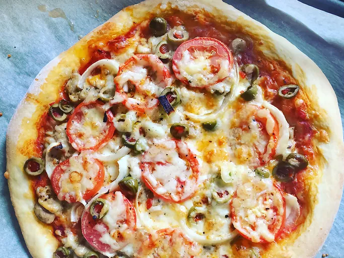

Pizza
Description
This is a great recipe when you don't want to wait for the dough to rise.
You just mix it and allow it to rest for 5 minutes and then it's ready to go!
It yields a soft, chewy crust.

If you're looking for a homemade pizza crust recipe that's great for beginners, you're in luck.
This top-rated recipe is super easy to throw together on a whim and
it puts the store-bought stuff to shame.
Learn how to make the best pizza crust of your life with just a few ingredients,
find out how to shape the dough, and get our best storage secrets.
Ingredients
- 1 cup of warm water (110F/45C)
- 1 package of active dry yeast
- 1 teaspoon of white sugar
- 2 and 1/2 cups of bread flour
- 2 tablespoons of olive oil
- 1 teaspoon of salt
Steps
- Gather all ingredients. Preheat oven to 450 degrees F (230 degrees C), and lightly grease a pizza pan.
- Place warm water in a bowl; add yeast and sugar. Mix and let stand until creamy, about 10 minutes.
- Add flour, oil, and salt to the yeast mixture; beat until smooth.
You can do this by hand or use a stand mixer fitted with a dough hook to make it easier.
- Let rest for 5 minutes.
- Turn dough out onto a lightly floured surface and pat or roll into a 12-inch circle.
- Transfer to the prepared pizza pan.
- Spread crust with sauce and toppings of your choice.
- Bake in the preheated oven until golden brown, 15 to 20 minutes.
Remove from the oven and let cool for 5 minutes before serving.
- Enjoy
Home